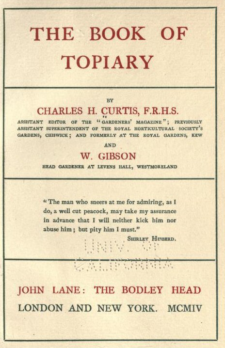

Friday, August the 5th, 2011
back to: title, date or indexes
“The man who sneers at me for admiring, as I do, a well-cut peacock, may take my assurance in advance that I will neither kick him nor abuse him; but pity him I must.”—Shirley Hibberd, the epigraph to The Book Of Topiary, which you can, and must, read in its entirety at the excellent Public Domain Review.
